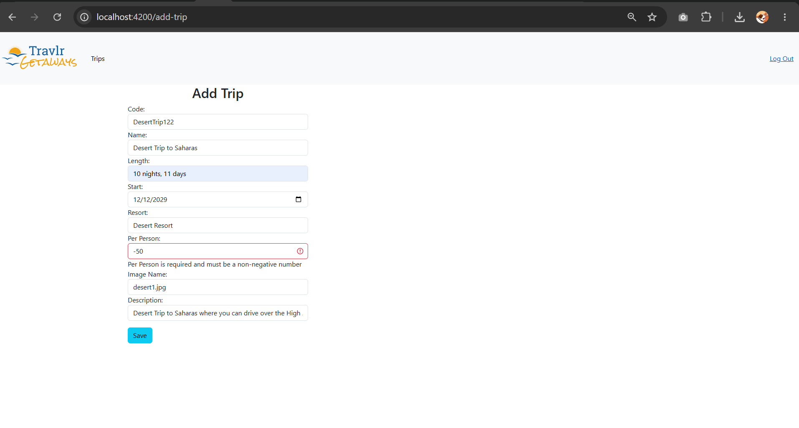
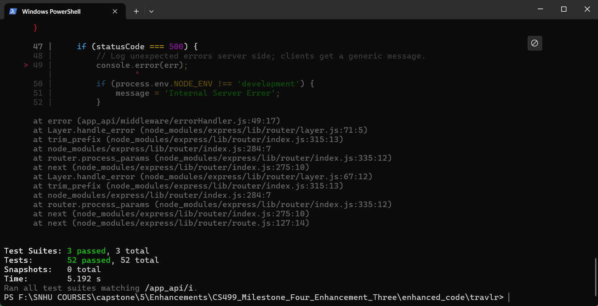

Milestone narrative, submitted as graded coursework.
Download the Word original: CS499_Milestone_Four_Narrative.docx
Milestone Four Narrative: Enhancement Three, Databases
Artifact Description
The artifact for this final enhancement is Travlr Getaways, the full stack travel booking application I built in CS 465: Full Stack Development I earlier in the Computer Science program, and the same artifact my first two enhancements transformed. The application pairs a MongoDB database and Express REST API with a server-rendered customer site and the administrative single-page application that Enhancement One migrated to React with TypeScript, over the algorithmic search, sorting, pagination, and recommendation layer that Enhancement Two added. Before this enhancement, the database layer was the weakest tier of the application: the trip schema declared every field as a required String and nothing else, prices were stored as text and could neither sort numerically nor be aggregated, user accounts had no concept of roles, request bodies flowed into Mongoose queries without sanitization, and the API advertised a wildcard CORS origin.
Justification and Improvements
I selected this artifact for the databases category because those weaknesses were not hypothetical: my Milestone One code review documented each of them with file and line references, and this enhancement closes every one at the layer where it belongs. The work divides into four areas. First, data integrity moved into the schema. The perPerson price is now a Number with non-negative bounds, which is the change that makes every aggregation in this enhancement possible; trip codes are unique and format-constrained at the index level, so duplicates are impossible even if a future controller forgets to check; the image field accepts only a bare image filename, structurally excluding path-traversal values; and every field carries trimming and length constraints with descriptive validation messages that the centralized error handler translates into clean 400 responses.
Second, the query workload moved into the database engine. MongoDB processes aggregation pipelines as a sequence of stages, where the documents each stage outputs pass to the next (MongoDB, Inc., n.d.-a), and I used that model to re-implement the entire Enhancement Two search contract inside the database: a $text match against a weighted full-text index, a computed relevance score via the $meta operator, range-based $match conditions that resume cursor pagination without offsets, a $sort with a case-insensitive collation, and a $facet stage that returns the result page and the total match count in a single round trip. The text index assigns weights of three, two, and one to the name, resort, and description fields, and MongoDB uses those weights to scale each field's contribution to the relevance score (MongoDB, Inc., n.d.-b); I chose those exact values because they mirror the application-level scorer from Enhancement Two, which sets up the comparison this narrative promised in Milestone Three. The search endpoint now takes an engine parameter: the database engine is the default, the application engine remains fully functional, both share one cursor format and response shape, and an integration test asserts that the two engines return byte-identical orderings for the same query. That parity test is the intellectual center of the enhancement, because the trade-off between the engines is now demonstrable rather than theoretical: the application engine ships the entire collection to Node and sorts in O(n log n) application time on every request, while the database engine sorts against indexes and transfers only one page. A new analytics endpoint extends the same idea, using a single pipeline with $regexFind, $group, and $bucket stages to compute per-rating counts, price statistics, and price-band distributions that the React interface surfaces as a catalog insights line.
Third, the application gained role-based access control. Users carry a role field, user by default, with admin grantable only by an operator script, never through the API: a new registration page creates accounts in the interface, registration deliberately ignores any role in the request body, and an integration test proves a smuggled role lands as an ordinary user. The role travels as a JWT claim, a requireRole middleware guards every mutating trip route, and the React interface hides the Add and Edit controls from non-administrators while the API enforces the rule regardless of what any client renders. Fourth, the enhancement builds defense in depth against NoSQL injection. OWASP's testing guidance notes that NoSQL injection can execute in the application layer rather than only the database engine, with potentially greater impact than traditional SQL injection (Open Worldwide Application Security Project [OWASP], n.d.), and the classic MongoDB variant smuggles operator keys such as $gt into credential objects to turn an equality check into a match-anything query. My defense is layered: a sanitization middleware strips dollar-prefixed and dotted keys from every inbound body, query, and parameter object before any controller runs, and the authentication handlers independently require credentials to be plain strings, so an operator object that somehow survived the first layer would still die at the second. Values are deliberately untouched, and a test proves a description mentioning a $400 price survives while a $where key on the same request is stripped from the stored document. The wildcard CORS origin from the code review was also tightened to the single SPA origin. The full stack is verified by fifty-two backend Jest tests, sixteen of them new database-integration tests running against a real in-memory MongoDB instance, alongside twenty-two frontend tests covering the role-gated interface and form validation. Figures 1 through 5 show the working product: the aggregation-computed catalog insights for an anonymous visitor (Figure 1), the role-gated interface before and after administrative promotion (Figures 2 and 3), schema-mirrored form validation rejecting invalid input (Figure 4), and the passing backend test suite (Figure 5).
Figure 1
The trip listing for an anonymous visitor, with the catalog insights line computed in a single MongoDB aggregation pipeline; no administrative controls are rendered.
Figure 2
The same listing for an authenticated standard user: role-based access control withholds the Add Trip and Edit Trip controls from non-administrators.

Figure 3
The listing for the same account after promotion to the admin role and a fresh login: the role claim in the new token enables the Add Trip and Edit Trip controls.

Figure 4
Schema-mirrored form validation rejecting a negative per-person price before the request reaches the API.

Figure 5
The backend Jest suite: fifty-two tests across the algorithm, endpoint, and database-integration suites, all passing.

Course Outcome Progress
This enhancement completes my outcome-coverage plan from Module One. Course Outcome 5, the security mindset, is its center of gravity and is now demonstrated in depth: the enhancement anticipates concrete adversarial moves, including operator injection, mass assignment of privileges, path traversal through stored filenames, and cross-origin abuse, and mitigates each with a tested, layered control, adopting the anticipate-and-mitigate posture the outcome describes rather than reacting to individual bugs. Course Outcome 4 is served by the professional database techniques themselves: schema-level validation, weighted text indexing, and multi-stage aggregation pipelines are the industry-standard tools for this problem class. Course Outcome 3 receives a substantial revisit through the engine comparison, which turns the design trade-off between application-level and database-level implementations of the same contract into something a reader can execute and measure. Outcomes 1 and 2 continue through the documentation and this narrative. With all three enhancements complete, my only remaining outcome work is the professional self-assessment that ties the portfolio together, and my plan is unchanged.
Reflection
The deepest lesson of this enhancement was that a schema change is never just a schema change. Converting perPerson from String to Number took one line; understanding its blast radius took the rest of the day. Documents already in the database kept their string values because Mongoose casts on write, not in place, so the seed process had to become the migration path; the React form edits prices as text, so the type conversion had to happen at a deliberate boundary between the form draft and the API payload; and the TypeScript compiler traced every place the old assumption lived, which turned out to be the fastest way to find them all. I came away with real respect for why production teams treat data migrations as first-class engineering work. The second lesson was that security controls compose better than they substitute: writing the sanitizer first made it tempting to call injection solved, but the string-type check in the authentication controller exists precisely because middleware can be unmounted, reordered, or bypassed in ways a controller cannot see, and the test that sends operator objects at the login route passes because of the second layer, not the first.
The hardest technical challenge was cursor pagination inside the aggregation pipeline. The application engine could resume anywhere because it held the whole sorted array in memory; the database engine has to express the resume position as a range condition, which is straightforward for name, price, and date sorts but subtle for relevance, because a text score is computed per query and cannot be compared until the $meta stage materializes it. Getting the strictly-past-the-anchor-or-tied-with-later-code condition right, in both sort directions, against a computed field, took more attempts than any merge sort ever did, and the test that walks the cursor across all twenty-seven trips asserting no duplicates and no gaps failed honestly until it was right. My last realization was about the role claim: tokens issued before the role field existed carry no role at all, and the middleware treats a missing claim as an ordinary user, so legacy sessions degrade safely instead of failing open. Designing for the data and tokens that already exist, not just the ones the new code creates, felt like the moment this stopped being coursework and started being database engineering.
References
MongoDB, Inc. (n.d.-a). Aggregation pipeline. MongoDB Documentation. https://www.mongodb.com/docs/manual/core/aggregation-pipeline/
MongoDB, Inc. (n.d.-b). Assign weights to $text query results on self-managed deployments. MongoDB Documentation. https://www.mongodb.com/docs/manual/core/indexes/index-types/index-text/control-text-search-results/
Open Worldwide Application Security Project. (n.d.). Testing for NoSQL injection. In Web security testing guide. https://owasp.org/www-project-web-security-testing-guide/stable/4-Web_Application_Security_Testing/07-Input_Validation_Testing/05.6-Testing_for_NoSQL_Injection.html